Pre-training LSTM networks on data-rich buildings to improve prediction accuracy for buildings with limited historical data. Evaluated across 12 experiments and 4 fine-tuning strategies using the Building Data Genome Project 2 dataset.
Watch the PRIME deployment system predict in real time. The blend weight shifts dynamically as the transfer model earns confidence against the pre-transfer baseline. Building: Rat/Denise, 2016–2017.
Watch how each strategy's error evolves as more target-building training data is added week by week. Select an experiment and metric, then hit Play.
Explore all 12 experiments through interactive charts. Switch between data-efficiency curves, the 8-week snapshot, N-source ablation, PRIME and cross-type comparisons, and the auto-switch policy.
Eagle/Education target. N = 1–15 source buildings pooled. N = 3 is optimal; diminishing returns beyond this point due to source building homogeneity.
Rat/Denise target. PRIME beats Scratch from week 1. The streaming line shows live-deployment MAE — the soft blend adapts as more data flows in.
All conditions collapse early. Cross-type is worst at 1 week (MAE ~948). All conditions converge within 5 MAE by 64+ weeks — domain distance dominates in the data-scarce regime.
All experiments compare four strategies on the same limited target-building data to isolate the effect of pre-training.
The framework was validated across 12 distinct experiments covering various building clusters and research questions.
| # | Experiment | Source → Target | Key Research Question |
|---|---|---|---|
| 1 | rat_education | Rat/Colin → Rat/Denise | Does transfer learning work at all? |
| 2 | rat_education_new | Rat/Theo → Rat/Lee | Is the benefit replicable within the same cluster? |
| 3 | eagle_education | Samantha → Brooke | Does TL work at a different site? |
| 4 | lamb_education | Lucas → Mae | Does TL work at a third site? |
| 5 | office_any | Miriam → Denita | Is TL effective for office buildings? |
| 6 | lodging_any | Celia → Oliva | Is TL effective for lodging buildings? |
| 7 | multi_transfer | 5-building pool → Brooke | Does multi-source pre-training fix collapse? |
| 8 | cross_type_transfer | Same-site / Same-type / Cross-type | What is the impact of domain distance? |
| 9 | ensemble_transfer | Model soup (5 baselines) | Joint training vs. weight averaging? |
| 10 | multitransfer_ablation | N=1…15 sources | How many source buildings are optimal? (N=3) |
| 11 | multitransfer_generalisation | 5-building pool → Denise | Multi-source benefit on easy targets? |
| 12 | switch_modelling | Colin → Denise | Does auto-selection beat either strategy? |
All experiment figures. Click any image to enlarge.
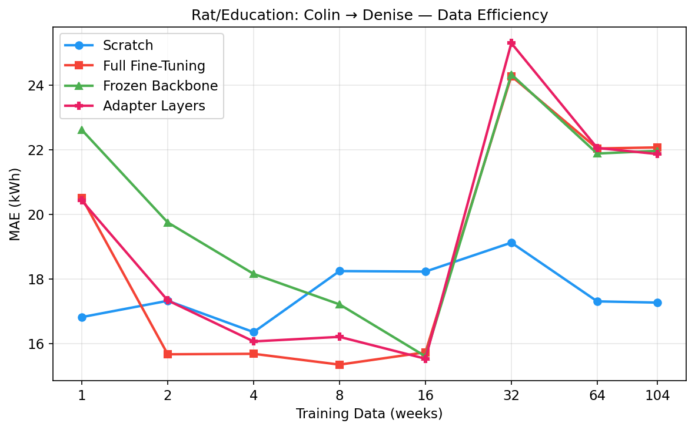
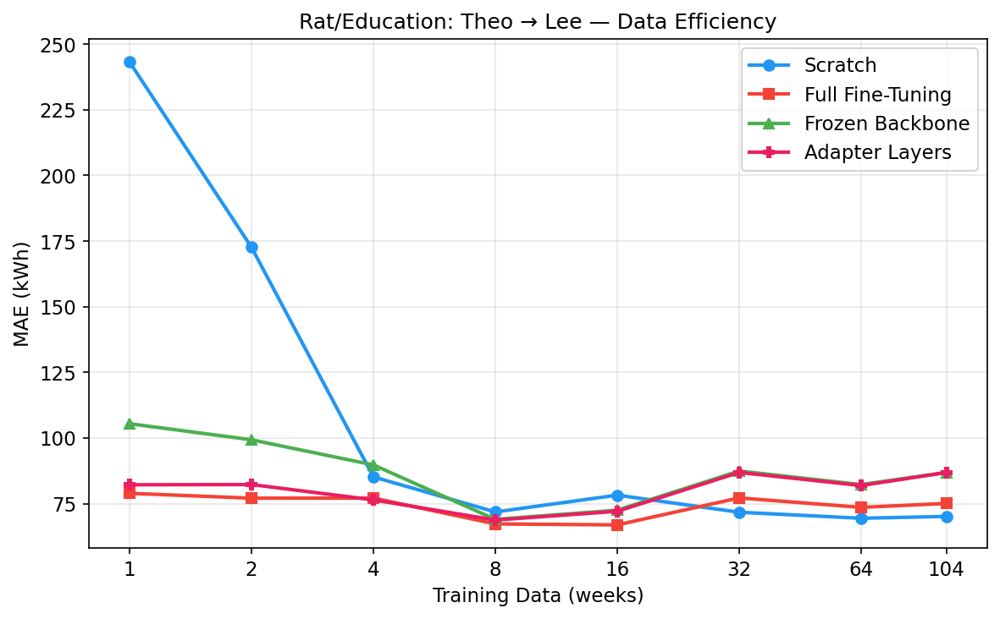
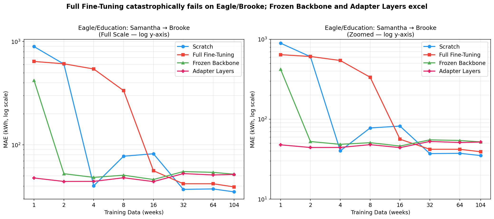
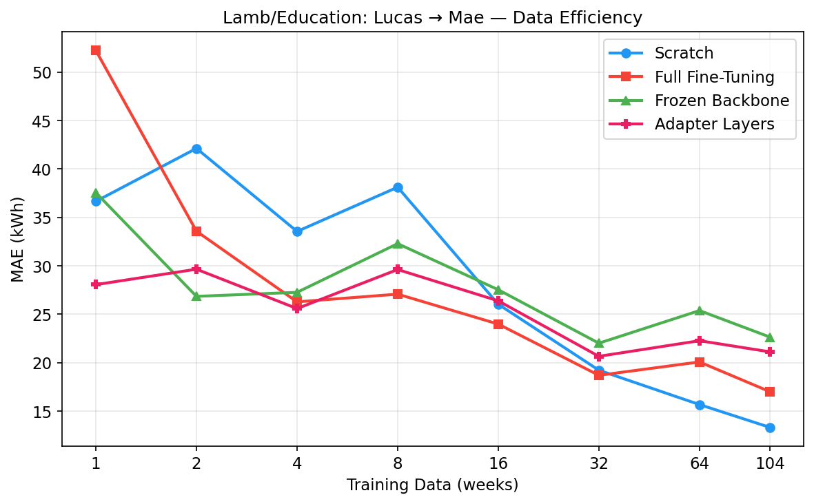
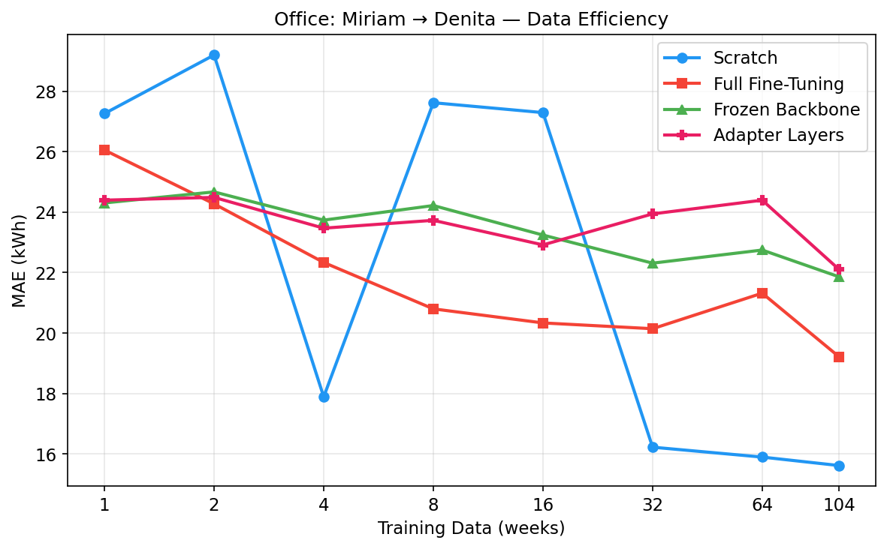
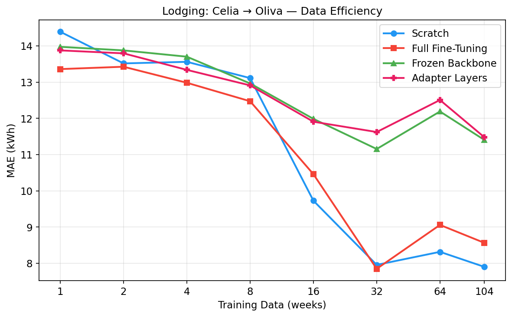
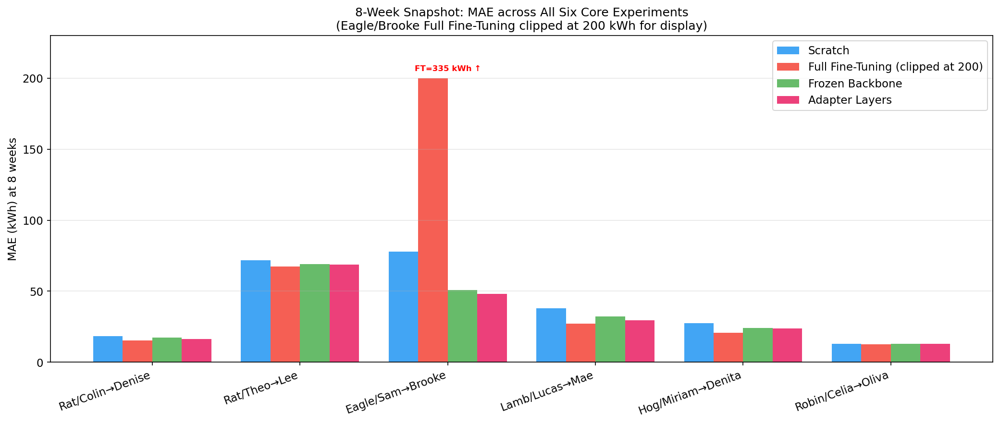
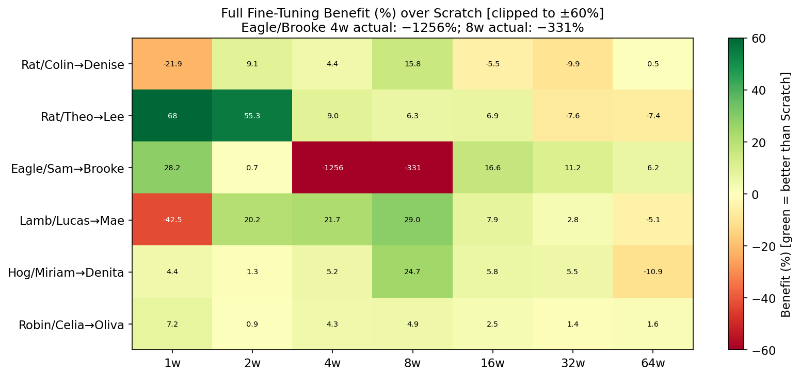
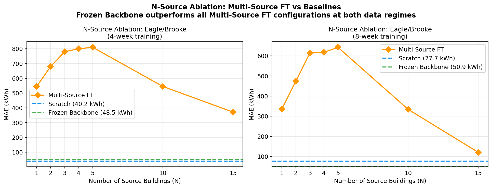
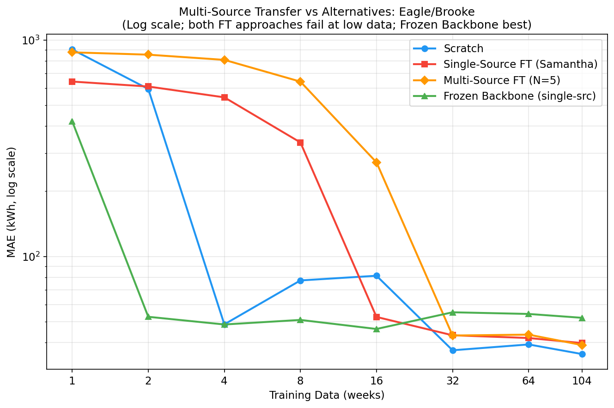
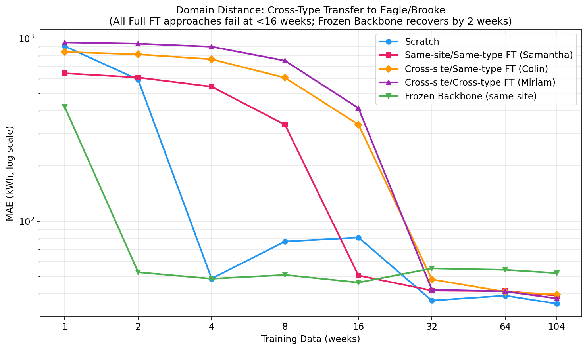
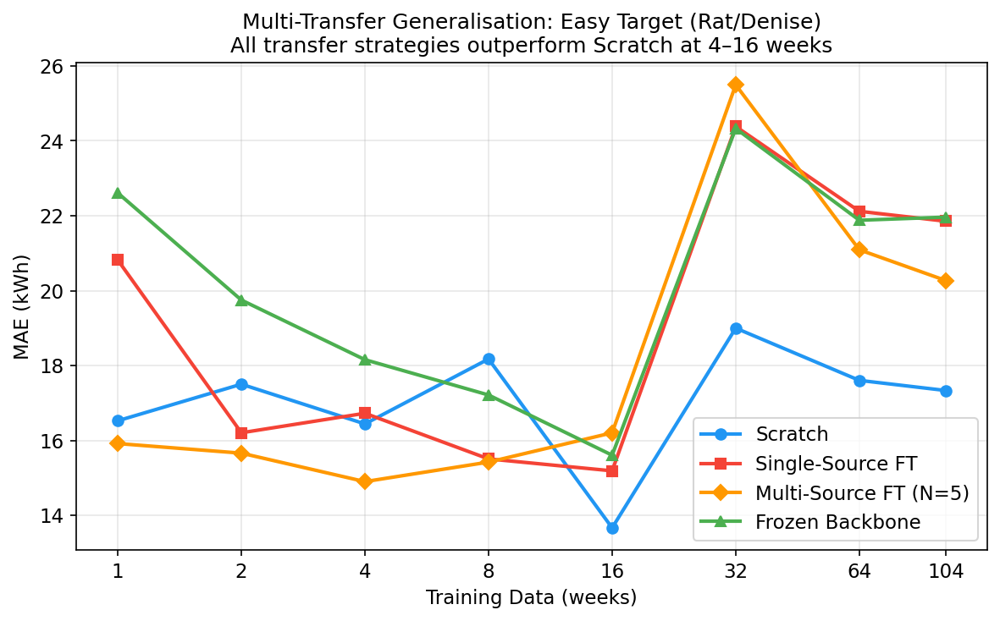
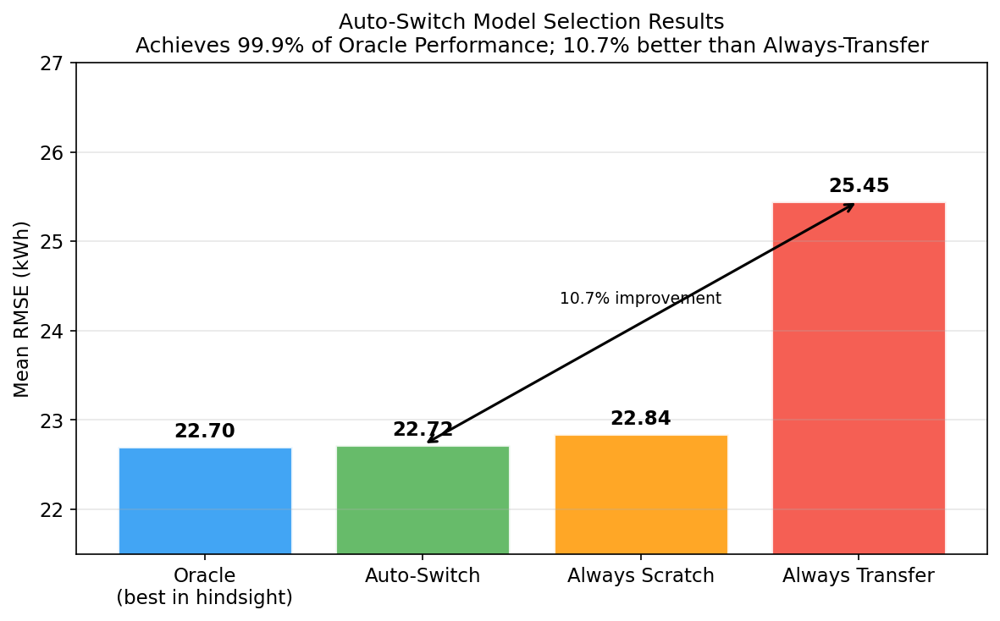
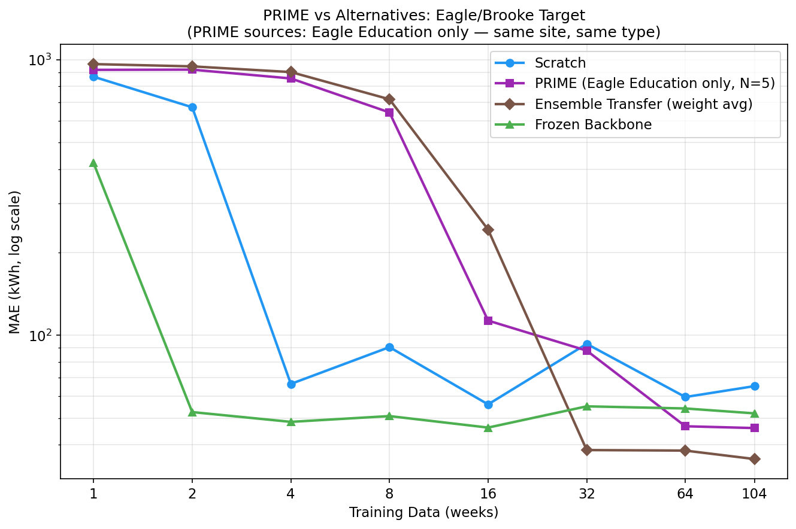
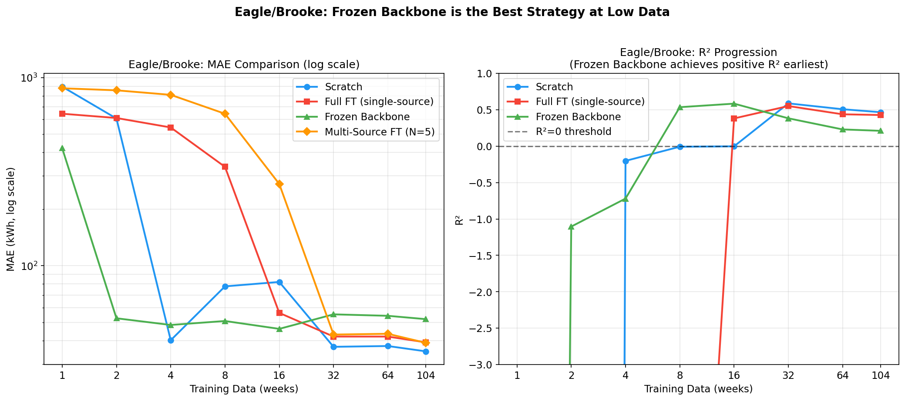